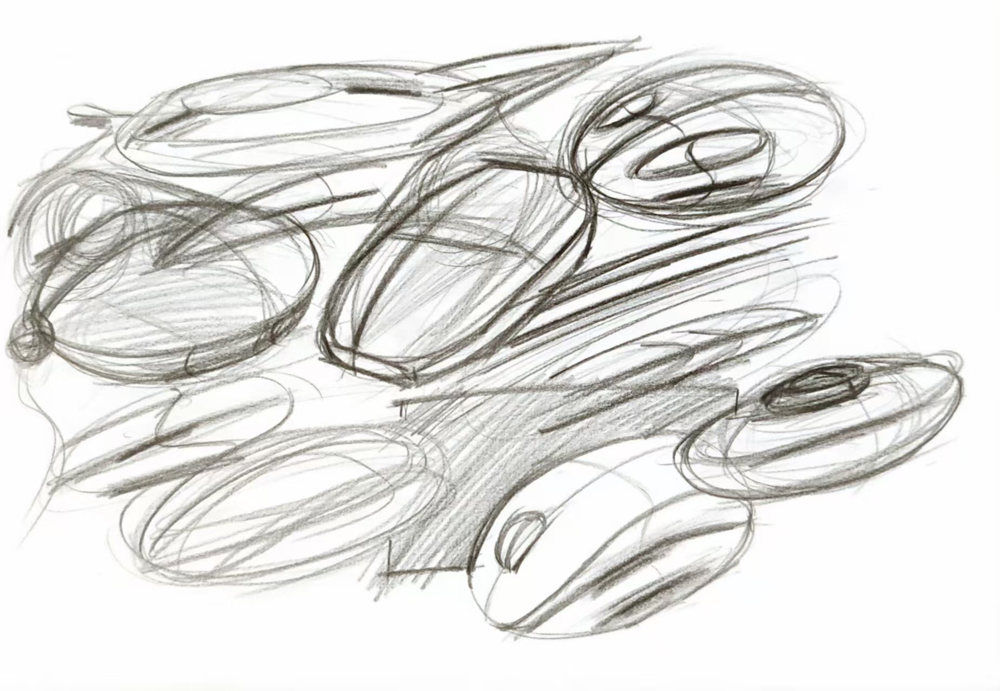
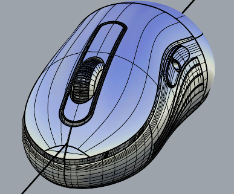
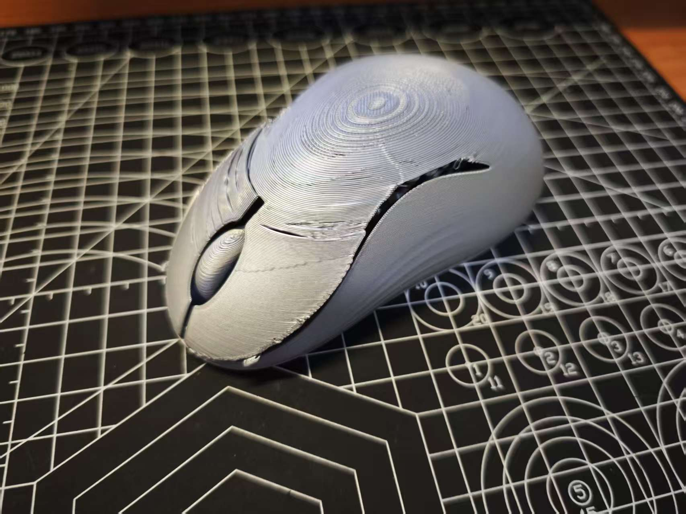
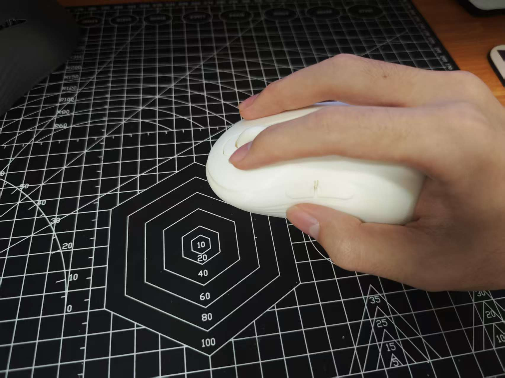
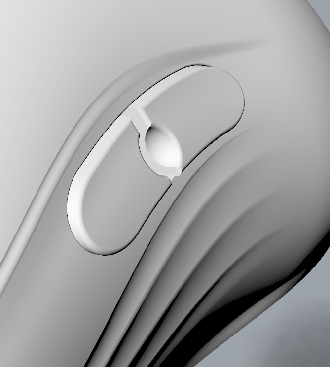
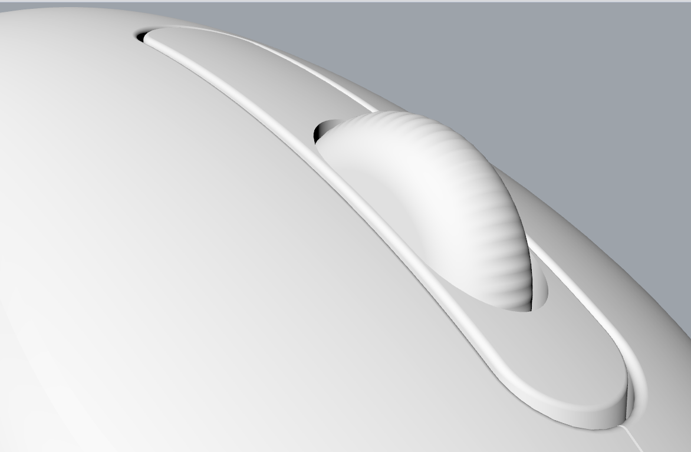

01
工业设计 / 手绘，Rhino，3D 打印，渲染
掌托支撑鼠标
一个围绕趴握支撑展开的鼠标形态设计，通过手绘、曲面建模和 3D 打印验证，把柔和外壳转化成更具体的人机关系。
问题
很多鼠标看起来顺滑，但并没有真正承托手掌和手指根部；如果前端倾角过大，又会压缩手指发力空间。
约束
- 支撑手指根部与掌心
- 保留手指发力空间
- 让圆润外壳保持统一
过程
- 发散手绘
- 仿生形态尝试
- 数字曲面迭代
- 3D 打印验证
- 细节与分型面收束

发散手绘从托手、前端形态、薄片和异形轮廓里寻找可能性。

曲面迭代用椭圆曲线和混接面整理上表面与侧面关系。

3D 打印验证实体模型暴露了开口、前倾角和后半部体量的问题。

手部关系高后背支撑手指根部，同时保留手指发力空间。

渐消纹理侧面纹理丰富光影，也提示手部停留区域。

滚轮细节挖槽和分缝让白色外壳有更清晰的结构层次。
目标
- 用抬高的后背体量承托手掌
- 让前端角度更平缓，给手指留下发力空间
- 把侧面流线转化成视觉和触觉提示
迭代
- 从大量鼠标轮廓、托手和异形方案中发散，最后收束到圆润趴握方向
- 尝试瓢虫式高拱仿生结构，但第一版模型显得厚重
- 通过 3D 打印发现开口过大、按键脆弱、前倾过陡和后半部肥大的问题
- 最终去掉大开口和过大倾角，保留外部弧线、渐消纹理、滚轮挖槽和底部分缝
最终特征
- 高后背支撑体量
- 侧面渐消纹理与底部分缝
- 滚轮挖槽和药丸形侧键
最终方案是一个白色、圆润、高后背的趴握鼠标概念，用椭圆曲面、流线分缝和渐消侧面纹理把支撑感变成可见的产品语言。
反思
这次项目让我意识到，设计不是把所有想法都塞进一个产品，而是在迭代中保护一个最清晰的意图。手绘负责打开方向，建模负责把形体说清楚，实体打印则把屏幕上看不到的问题暴露出来。